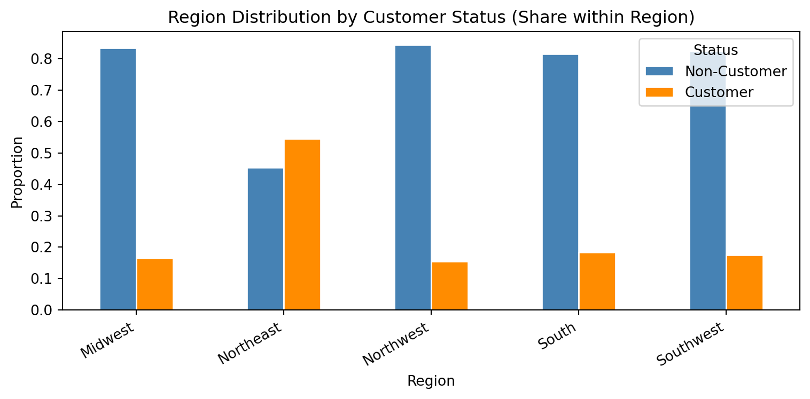
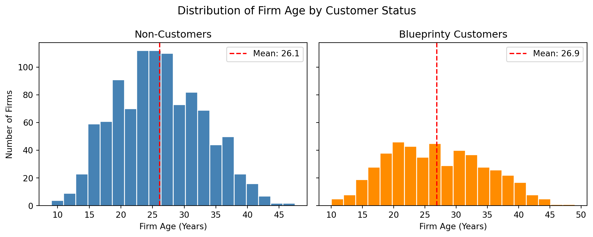
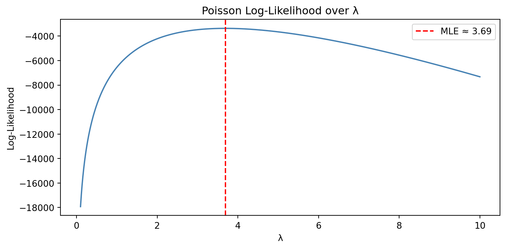

Poisson Regression and Maximum Likelihood Estimation
A Case Study of Blueprinty’s Software and Patent Awards
Fitting a Poisson regression model via maximum likelihood to estimate the effect of Blueprinty’s software on patent awards.
Author
David Nierman
Published
May 18, 2026
Introduction
Blueprinty is a small software company that develops tools specifically designed to help firms prepare and submit patent applications to the US Patent Office. Their marketing team wants to make the case that engineering firms using Blueprinty’s software have a higher rate of patent approval than those that do not.
Ideally, evaluating this claim would require panel data tracking each firm’s patent success rate both before and after adopting the software — a clean before-and-after comparison that would isolate the software’s effect. No such longitudinal data exists. Instead, Blueprinty has assembled a cross-sectional dataset of 1,500 mature (non-startup) engineering firms, capturing each firm’s number of patents awarded over the last five years, its regional location, its age since incorporation, and whether or not it is a Blueprinty customer.
The core difficulty is that Blueprinty’s customers are not randomly assigned. Firms that choose to adopt the software may differ systematically from those that do not — perhaps they are older, more established, or concentrated in regions with historically higher patent activity. Any raw difference in patent counts between customers and non-customers could therefore reflect those underlying firm characteristics rather than a genuine effect of the software. Untangling the software’s contribution from these pre-existing differences is the central analytical challenge of this study.
Blueprinty customers average 4.13 patents over the last five years, compared to 3.47 for non-customers — a meaningful gap on its face. Both distributions are right-skewed, with most firms clustered at low patent counts and a long tail of high-output firms. The customer distribution appears shifted rightward, suggesting customers tend to receive more patents. However, because customers are not randomly assigned, this difference may reflect underlying firm characteristics — such as age or region — rather than any effect of the software itself.
region_counts = df.groupby(["region", "iscustomer"]).size().unstack(fill_value=0)region_counts.columns = ["Non-Customer", "Customer"]region_pct = region_counts.div(region_counts.sum(axis=1), axis=0)fig, ax = plt.subplots(figsize=(8, 4))region_pct.plot(kind="bar", ax=ax, color=["steelblue", "darkorange"], edgecolor="white")ax.set_title("Region Distribution by Customer Status (Share within Region)")ax.set_xlabel("Region")ax.set_ylabel("Proportion")ax.set_xticklabels(region_pct.index, rotation=30, ha="right")ax.legend(title="Status")plt.tight_layout()plt.show()

The Northeast stands out sharply: customers make up a majority of firms in that region, while all other regions are dominated by non-customers. This regional concentration matters because if Northeast firms also tend to win more patents for reasons unrelated to Blueprinty — stronger engineering ecosystems, proximity to patent attorneys, etc. — then the raw customer advantage in patent counts could be partly a Northeast effect rather than a software effect.
cust_age = df[df["iscustomer"] ==1]["age"]non_cust_age = df[df["iscustomer"] ==0]["age"]fig, axes = plt.subplots(1, 2, figsize=(10, 4), sharey=True)axes[0].hist(non_cust_age, bins=20, color="steelblue", edgecolor="white")axes[0].axvline(non_cust_age.mean(), color="red", linestyle="--", label=f"Mean: {non_cust_age.mean():.1f}")axes[0].set_title("Non-Customers")axes[0].set_xlabel("Firm Age (Years)")axes[0].set_ylabel("Number of Firms")axes[0].legend()axes[1].hist(cust_age, bins=20, color="darkorange", edgecolor="white")axes[1].axvline(cust_age.mean(), color="red", linestyle="--", label=f"Mean: {cust_age.mean():.1f}")axes[1].set_title("Blueprinty Customers")axes[1].set_xlabel("Firm Age (Years)")axes[1].legend()fig.suptitle("Distribution of Firm Age by Customer Status", fontsize=13)plt.tight_layout()plt.show()

The age distributions of customers and non-customers are broadly similar — both centered in the mid-twenties — but customers skew slightly older on average (26.9 years vs. 26.1 years for non-customers). Older firms have had more time to develop patent portfolios and internal processes for filing applications, so even a modest age difference could inflate the apparent patent advantage among customers. Taken together, the regional and age imbalances underscore why a simple comparison of means is insufficient: any rigorous assessment must control for these confounders.
A Simple Poisson Model via Maximum Likelihood
The number of patents awarded to each firm is a count — a non-negative integer. This rules out the Normal distribution as a natural generative model: a Normal can assign positive probability to negative or fractional values, neither of which makes sense for patent counts. The Poisson distribution is the standard starting point for non-negative integer outcomes. It is parameterized by a single rate \(\lambda > 0\), which represents the expected number of events, and it assigns probability only to the non-negative integers \(\{0, 1, 2, \ldots\}\). We therefore model each firm’s patent count \(Y_i\) as an independent draw from a Poisson distribution with rate \(\lambda\).
Given \(n\) independent observations \(Y_1, Y_2, \ldots, Y_n\) each drawn from a Poisson distribution with rate \(\lambda\), the probability mass function for a single observation is:
The last term is a constant with respect to \(\lambda\) and plays no role in maximization. The MLE is found by differentiating and setting the derivative to zero, which yields \(\hat{\lambda} = \bar{Y}\) — the sample mean.
import numpy as npfrom scipy.special import gammalndef poisson_loglikelihood(lam, Y):return np.sum(-lam + Y * np.log(lam) - gammaln(Y +1))Y = df["patents"].valueslambdas = np.linspace(0.1, 10, 500)log_liks = [poisson_loglikelihood(l, Y) for l in lambdas]mle_lambda = lambdas[np.argmax(log_liks)]fig, ax = plt.subplots(figsize=(8, 4))ax.plot(lambdas, log_liks, color="steelblue")ax.axvline(mle_lambda, color="red", linestyle="--", label=f"MLE ≈ {mle_lambda:.2f}")ax.set_xlabel("λ")ax.set_ylabel("Log-Likelihood")ax.set_title("Poisson Log-Likelihood over λ")ax.legend()plt.tight_layout()plt.show()

The curve rises steeply from low values of \(\lambda\), reaches a single peak, then falls off gradually to the right. The peak — marked by the red dashed line at \(\hat{\lambda} \approx\) 3.69 — is the maximum likelihood estimate: the value of \(\lambda\) that makes the observed patent counts most probable under the Poisson model. Reading the MLE off the plot is straightforward: it is simply the \(\lambda\) value directly below the highest point on the curve.
Analytical MLE
To find the MLE analytically, we differentiate the log-likelihood with respect to \(\lambda\) and set the result equal to zero. Starting from:
The numerical optimizer arrives at essentially the same answer as the sample mean (3.6847 vs. 3.6847), confirming the analytical result. This agreement is expected: both approaches are solving the same problem — one algebraically, one computationally — so they must converge to the same value.
Poisson Regression
The simple Poisson model assumed every firm shares the same rate \(\lambda\). That is too restrictive: older firms, Northeast firms, and Blueprinty customers all plausibly have different expected patent counts. Poisson regression relaxes this by letting each firm have its own rate \(\lambda_i\) that depends on its observed characteristics:
Here \(X_i\) is a vector of covariates for firm \(i\) (age, region indicators, customer status) and \(\beta\) is a vector of coefficients to be estimated. The exponential function serves as the link between the linear predictor \(X_i'\beta\) — which can take any real value — and the rate parameter \(\lambda_i\), which must be strictly positive. By exponentiating, we guarantee \(\lambda_i > 0\) for any value of \(\beta\), making the model well-defined for count outcomes.
The log-likelihood function is updated to accept a covariate matrix \(X\) and coefficient vector \(\beta\), computing firm-specific rates via \(\lambda_i = \exp(X_i'\beta)\):
def poisson_reg_loglik(beta, Y, X): eta = np.clip(X @ beta, -30, 30)return np.sum(-np.exp(eta) + Y * eta - gammaln(Y +1))
The design matrix includes an intercept, firm age, age squared, region dummies (Midwest dropped as the reference category), and the customer indicator. Age squared is included because the relationship between firm age and patenting is unlikely to be linear — very young and very old firms may patent at different rates than a straight line would predict. One region must be omitted to avoid perfect collinearity: if we included all five region dummies, their sum would equal the intercept column, making \(X\) rank-deficient and the coefficients non-identifiable.
The coefficient estimates from both approaches are identical. The standard errors also match closely here because the numerical Hessian is computed via a fine-grained finite-difference approximation; in general, slight discrepancies can arise because sm.GLM uses the analytic (expected) information matrix while numerical optimizers approximate it, but with well-behaved data and a tight grid the two converge.
Interpretation
The age coefficient is positive (≈ 0.149) and the age-squared coefficient is negative (≈ −0.003), together describing a concave inverted-U relationship: patent output rises with firm maturity but at a decreasing rate and eventually plateaus. The region dummies are all small and statistically modest relative to their standard errors, suggesting that after controlling for age and customer status, regional differences in patent rates are limited.
The customer coefficient is 0.208 (SE ≈ 0.031), which is highly significant. Exponentiating gives \(e^{0.208} \approx 1.23\), meaning Blueprinty customers are estimated to receive about 23% more patents than otherwise identical non-customer firms. The sign is in the direction the marketing team hoped for, and the magnitude is economically meaningful. That said, this is still an observational estimate — unobserved firm-level differences not captured by age and region could still confound the result.
The Effect of Blueprinty’s Software
Because Poisson regression is multiplicative in \(\lambda\), the customer coefficient (≈ 0.208) does not translate directly into “additional patents.” To produce a more interpretable estimate we use the counterfactual prediction approach: take the observed covariate matrix and flip every firm’s customer status to 0, then to 1, and compare predicted patent counts.
X0 = X_mat.copy()X1 = X_mat.copy()X0[:, -1] =0# set all firms to non-customerX1[:, -1] =1# set all firms to customery0_hat = np.exp(X0 @ beta_hat)y1_hat = np.exp(X1 @ beta_hat)ate = (y1_hat - y0_hat).mean()print(f"Average predicted patents (non-customer): {y0_hat.mean():.3f}")print(f"Average predicted patents (customer): {y1_hat.mean():.3f}")print(f"Average treatment effect: {ate:.3f}")
Average predicted patents (non-customer): 3.436
Average predicted patents (customer): 4.229
Average treatment effect: 0.793
Holding each firm’s age and region fixed at its observed values, switching customer status from 0 to 1 increases predicted patents by an average of 0.79 over five years — roughly 0.79 additional patents per firm. Put differently, the model estimates that Blueprinty’s software is associated with about one extra patent every six years for a typical firm in this sample.
This finding is consistent with Blueprinty’s marketing claim, but it does not establish causality. The analysis controls for age and region, yet several potentially important confounders remain unaddressed:
Internal R&D investment — firms that spend heavily on research are both more likely to patent and more likely to invest in specialized tools like Blueprinty’s software. Higher patent output may reflect R&D intensity rather than the software itself.
Patent attorney quality — firms with access to experienced IP counsel tend to file more successful applications. Such firms may also be more likely to adopt purpose-built patent software.
Firm size and revenue — larger firms have more resources to buy software subscriptions and more engineers generating patentable ideas. Size is not in the dataset, so its effect is absorbed into the error term.
Prior patent experience — firms already skilled at navigating the patent process may adopt Blueprinty to manage growing workloads, rather than using it to improve their odds. Selection based on prior success would inflate the apparent customer effect.
Without a randomized assignment of software access — or a credible natural experiment — we cannot rule out that these unobserved differences, rather than the software, explain the gap in patent counts.